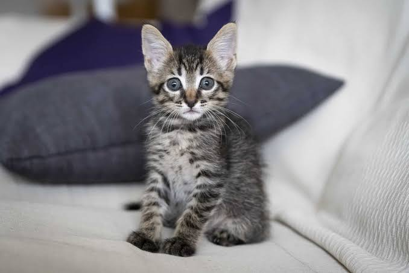

Los gatos son animales sorprendentes, pueden dormir entre 12 y 16 horas al día. Además, sus bigotes son muy sensibles y les ayudan a percibir los objetos cercanos y orientarse en espacios estrechos. Otra curiosidad es que los gatos pueden ver mejor que los humanos cuando hay poca luz, aunque no pueden ver en la oscuridad total. También tienen un oído muy sensible, capaz de detectar sonidos agudos que las personas no escuchamos.